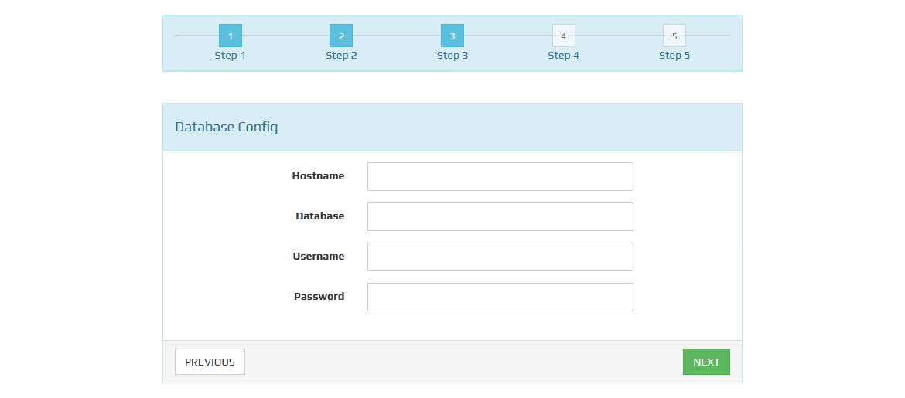
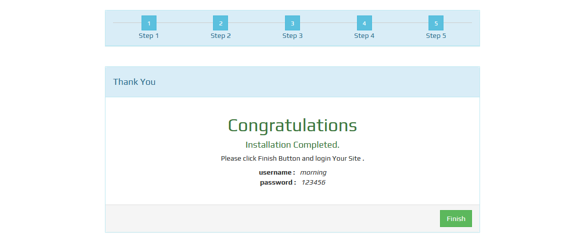
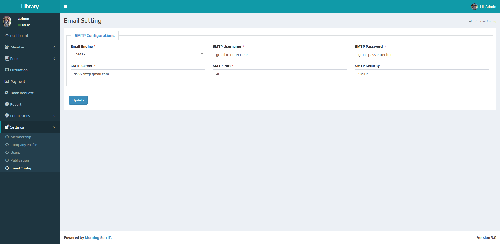
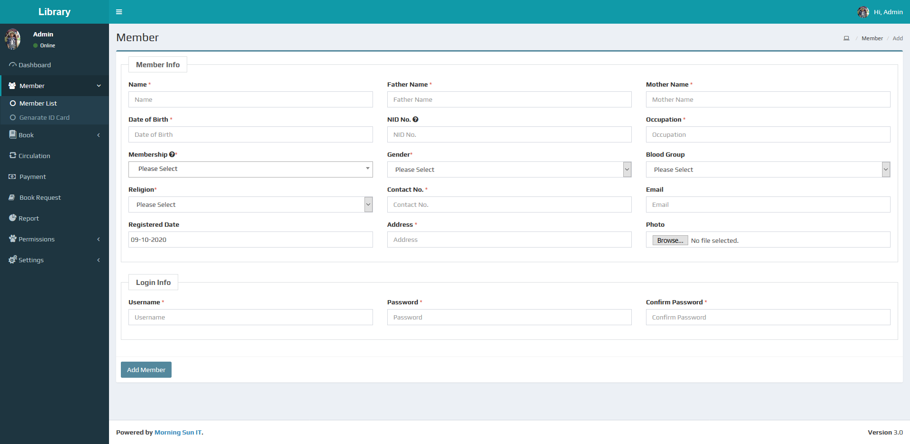

MS-Library - Library Management System v3.3
Created: 24-July-2021
By: Morning Sun IT ( morningsunit.com
)
Support: Online Help line Desk ( support.morningsunit.com )
Details of Library Management System v.3.3 documentation
System Requirement
PHP 7.3 MYSQL 5+ PHP Mcrypt Extention PHP MBString Extension PHP DOM Extension PHP GD Extension PHP MYSQL Extension PHP PDO Extention PHP CURL Extention
Feature
Dashboard with visual summary of the complete system. Graphical presentations of issues and returns. Fully responsive and cross platform supported. Multiple Language facilities. Dynamic modules for Library management. Dignified module to categorize Books. Separate module to categorize Member type. Define User type with Account creation and password changing option. Customized User role Permission settings. Personalized Settings for Updating/Changing Ownership or Business Information. Generate multiple reports (Book, Membership, Payment, and Category). Automatic error validation system. An Admin user gets auto created on start-up. The Admin only access the system settings. Admin creates desired type of users (Authority, Librarian, and Operator). The admin can edit/update/delete any user and information. The Authority can create/edit/delete any library and Member information. The Authority/Librarian can control all Library and Member related issues. An Operator and a Member has distinguished user interface. An Operator has access to issue and return books. A Member only views Membership profile and status. Book Request Service. Payment option for Penalty fees. Generate Membership card with QR Code. Separated Waste/Lost Book List. Book Archive Option. 24/7 Alert service with notification. Easy password changing facility. Forgot Password facility with validation code. SMTP configuration.
Installation
Please follow below instructions carefully:
An Active Internet connection is necessary to install successfully. Unzip and copy the script folder in your hosting server. Make sure in script folder index.php file have permission as 644. Manually create a database using “Phpmyadmin”. Run the install script path from any web browser (http://server.com/install/index). if pre-install checklist seems all ok then click next. Enter the purchase key carefully provided by ENVATO. Provide hostname, database name, username and password. After filling up all input fields, click next. Then fill up organization information and admin login information and click next. Now click 'Finished' button, then view login page.


How to get Started
1. Dashboard
When you login after the installation you will get a complete blank Dashboard
First of all, set the Settings and Permissions menu as you like
Short summary are there with quick link. Issued and Returned bar chart are visible. Categories table will be visible here. Last 5 Issued and Rerurned table will be shown here and you can easily go to the details page.
2. Settings
The Settings menu contains Membership List, Company Profile, Users, Publication, Email Config. We are providing a column by default Membership. You Can easily Add, Edit, Delete and change status 'on/off' for Membership and Publication. Membership are necessary for Issued and Returend Book. The Publication is required at the time of adding any Book. You can change your business information from Company Profile and we can also change the default prefix if you want. You can change Language information from Company Profile. You can easily Add, Edit, change password or Delete any User. Remember to add the User Role from the Permissions menu, before adding a user.

3. Permissions
It has two sub menu called User Role and Permission. You can create user roles as you like from the user role sub menu. You can add/change permissions according to the user role from the permissions sub menu. Remember, the Settings and Permissions menu does not permit a user role.
4. Book
The Book menu contains Categories, Archive, Wastage, Writer. We are providing a column by default Categories. You Can easily Add, Edit, Delete and change status 'on/off' for Categories, Archive and Writer. Categories and Writer are necessary for Add new Books. You can easily add and returned Wastage book list.

5. Member
The Member menu contains Member List and Genarate ID Card. You can easily add Member from the 'Add Member' button. You can easily change Member status (e.g. Active/deactive). This Member List is required for Issued Book. Easily Genarate ID Card for member.

6. Circulation
There will be list of Circulation. Easily Book Issued and returned from the 'Issued and returned' button. After pressing the 'Issued and returned' button, a dialog box will open, where you have to search for the member ID and enter the member specific panel. You can issue books through book ID from issue area. Use the following instructions for the books issued from the action column of the book list.such as renewal,return, lost.
7. Payment
Here are Payment options for any kind of Penalty. You can easily view and print money Receipt.
8. Book Request
There will be list of Book Request. Add Book Request in Here.
9. Report
There will be different type of report here. Date range report are shown here. Individual report also there. Reports are also printable.